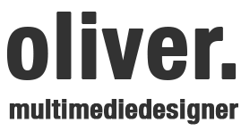
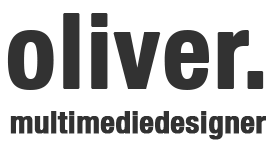
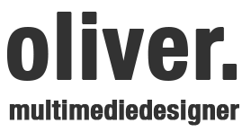
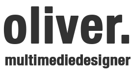

Nabo Kiosk var et mobile-first projekt hvor jeg har lært at lave responsivt design. Formålet med projektet var at lære hvordan man kan lave designs til forskellige skærmstørrelser og devices.
I projektet lærte jeg hvordan man udvikler interviewspørgsmål og analyserer svar. Vi var ude og lave field-research, hvor vi omdannede vores indsigter til brugbare funktioner på hjemmesiden.
Nogle af mine fokuspunkter i dette projekt var bl.a. og være ude blandt kunder og interviewe, så vi kunne få omdannet vores indsigter til reelle løsninger.
Value Proposition Canvas var også noget jeg lærte at bruge i dette projekt, til at få indskærpet vores interviewsvar, så vi vidste hvilke problemer vi kunne løse og hvordan.
Udover dette lærte jeg at bruge Grid til at holde sitet symmetrisk og kontrolleret, så det giver bedst brugervenlighed.
Slutteligt var alle inde over programmering, hvor vi lærte at lave responsivt design til flere forskellige devices.